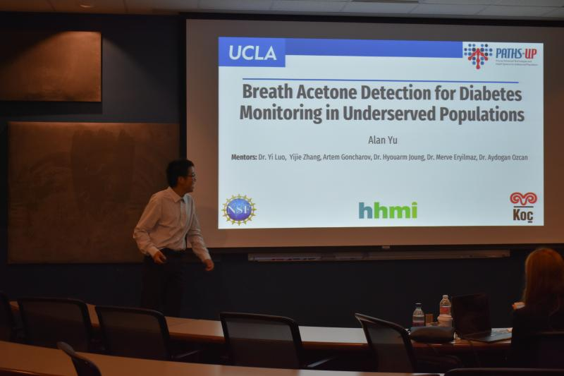

More Details:
• Developed UI in Python using Tkinter allowing for fine-grain control of camera API to take
images
of paper-based sensor
• Designed desktop widget using QT in C++ utilizing OpenCV library to intelligently detect
particles
saving 60% in storage
• Best Poster Presentation, issued by Howard Hughes Medical Institute for best Undergrad
Research Poster out of ~20 teams
• Trained artificial intelligence and scaled neural networks with PyTorch to identify the type
of
pollutants using holograms
Paper Abstract:
Exposure to bio-aerosols such as pollen can lead to adverse health effects. There is a need for
a portable and cost-effective device for long-term monitoring and quantification of various
types of pollen. To address this need, we present a mobile and cost-effective label-free sensor
that takes holographic images of flowing particulate matter (PM) concentrated by a virtual
impactor, which selectively slows down and guides particles larger than 6 μm to fly through an
imaging window. The flowing particles are illuminated by a pulsed laser diode, casting their
inline holograms on a complementary metal-oxide semiconductor image sensor in a lens-free mobile
imaging device. The illumination contains three short pulses with a negligible shift of the
flowing particle within one pulse, and triplicate holograms of the same particle are recorded at
a single frame before it exits the imaging field-of-view, revealing different perspectives of
each particle. The particles within the virtual impactor are localized through a differential
detection scheme, and a deep neural network classifies the pollen type in a label-free manner
based on the acquired holographic images. We demonstrated the success of this mobile pollen
detector with a virtual impactor using different types of pollen (i.e., bermuda, elm, oak, pine,
sycamore, and wheat) and achieved a blind classification accuracy of 92.91%. This mobile and
cost-effective device weighs ~700 g and can be used for label-free sensing and quantification of
various bio-aerosols over extended periods since it is based on a cartridge-free virtual
impactor that does not capture or immobilize PM.
Published as a
co-author in the American Chemical Society
Some Images:
1 / 3
Shaking Hands with PI, Professor Ozcan
3 / 3

Presenting for REU during my Freshman Summer